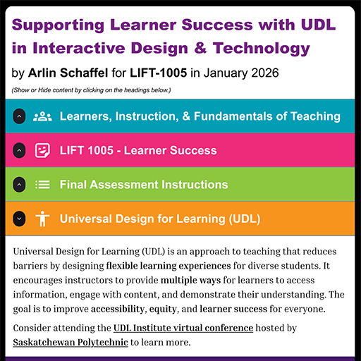
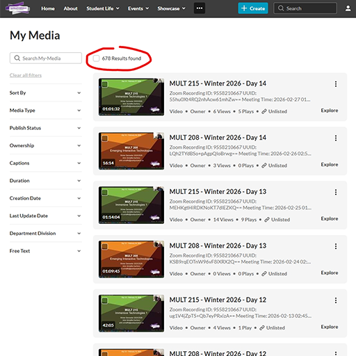

Diversity & Inclusion

The Diversity and Inclusion competency focuses on demonstrating respect and inclusivity in our instructional practice and utilizing intercultural communication in all learning environments.

(Click to View)
Universal Design for Learning
As part of LIFT-1005 Learner Success in January 2026, I created an interactive website focused on solving a challenge my learners face using two UDL approaches.
This module prompted me to reconsider how I assess learning. Many of my students think visually or spatially, yet I often relied on written reflections as evidence of understanding.
Developing this artifact clarified that inclusion means separating the learning outcome from the format used to demonstrate it. Providing flexible demonstration formats and clearer structural supports reduces unnecessary barriers for students.
I am committed to assessment practices that recognize diverse strengths, communication styles, and cultural backgrounds within my classroom.

(Click to View)
Recorded Classes as an Inclusive Practice
I record every class I teach at Saskatchewan Polytechnic and make them available to students with captions. Over time, this has resulted in more than 600 recorded classes (as of March 3, 2026) accessible across my courses.
Providing recordings supports a wide range of learners by allowing students to pause, rewatch, and process information more deliberately. For multilingual learners, this reduces the pressure to understand everything in real time.
This practice reflects my commitment to creating learning environments that recognize diverse needs, schedules, and communication styles without requiring students to disclose or justify them. Although some instructors worry recordings reduce attendance, I have never found that to be the case.